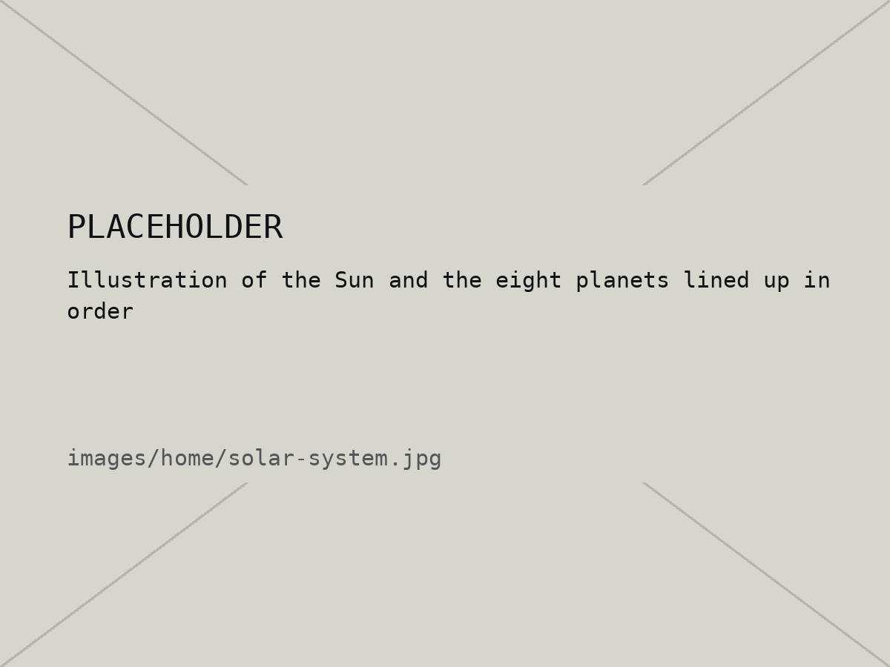
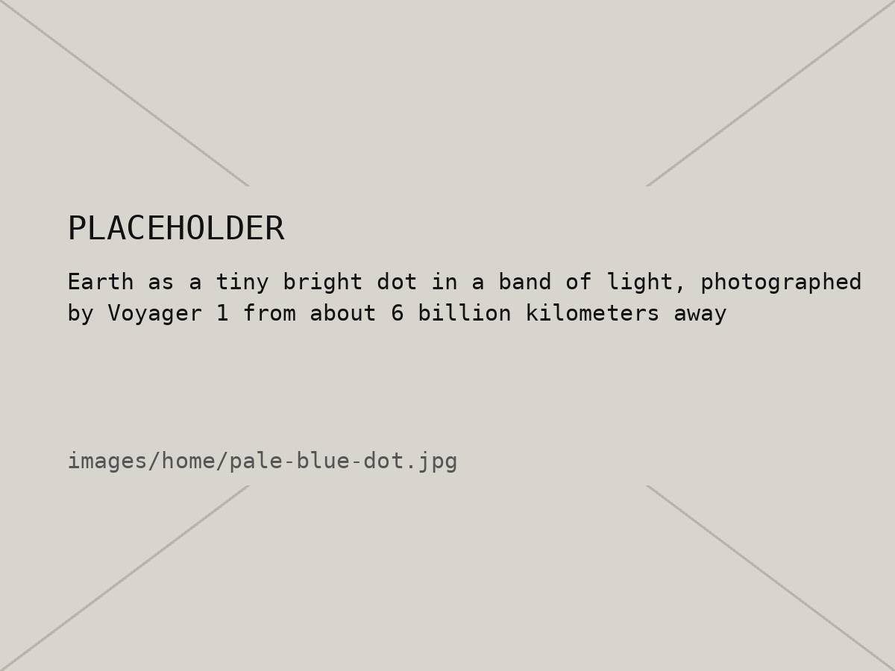

00 / 10 — Index
The Solar
System
One star, eight planets, a lot of empty space. A small field guide by Sakchhyam Kc.
01 — Intro
The solar system is the Sun plus everything stuck orbiting it: eight planets, their moons, a belt of asteroids, comets, and a whole lot of dust. It all formed around 4.6 billion years ago out of a giant spinning cloud of gas.
The first four planets are small and rocky. Past the asteroid belt you get the giants: two made mostly of gas, and two made mostly of ice. This site has a page for the Sun, our Moon, and every planet out to Neptune. Use the menu up top, click a dot in the orbit model, or pick from the index at the bottom.
02 — The system in numbers
| Age | About 4.6 billion years |
|---|---|
| Planets | 8 |
| Sun's share of all the mass | About 99.8% |
| Rocky planets | Mercury, Venus, Earth, Mars |
| Giant planets | Jupiter, Saturn (gas) · Uranus, Neptune (ice) |
| Sunlight's trip to Neptune | About 4 hours |
03 — Images


04 — Orbit model
Not to scale: the distances are squashed so everything fits in the box. The order of the speeds is real (inner planets are faster), the exact speeds aren't. Click a dot to go to that planet.
05 — Index
| No. | Page | Type | From the Sun |
|---|---|---|---|
| 01 | Sun | Star | — |
| 02 | Mercury | Rocky | 58M km |
| 03 | Venus | Rocky | 108M km |
| 04 | Earth | Rocky | 150M km |
| 05 | Moon | Moon | (orbits Earth) |
| 06 | Mars | Rocky | 228M km |
| 07 | Jupiter | Gas giant | 778M km |
| 08 | Saturn | Gas giant | 1.4B km |
| 09 | Uranus | Ice giant | 2.9B km |
| 10 | Neptune | Ice giant | 4.5B km |